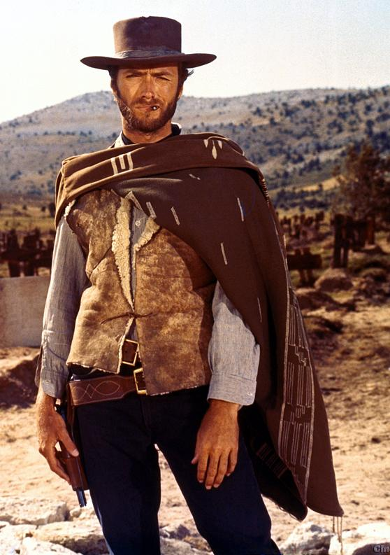
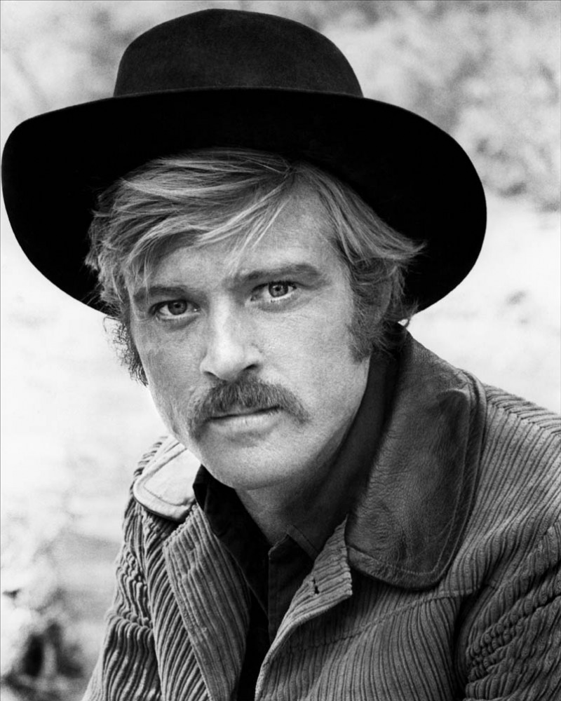
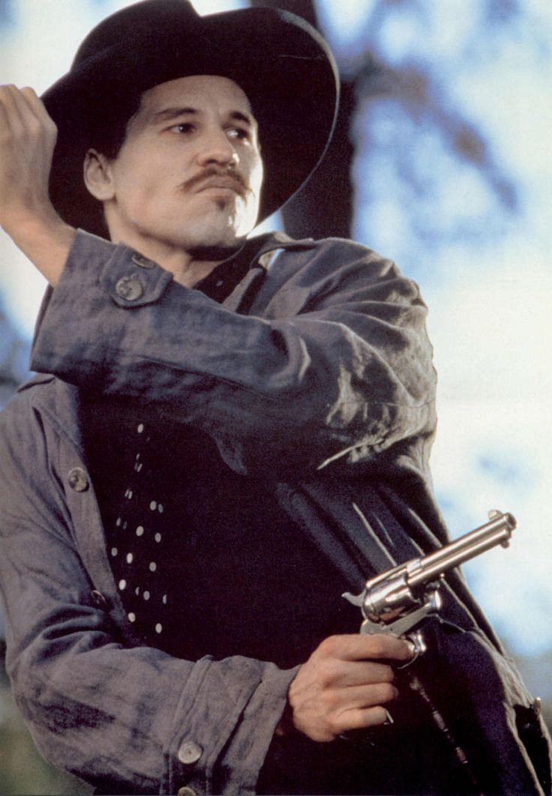

The following is a simple quiz about Western movies. This quiz will test your knowledge of great Western movies, both modern and classic.
For a helpful list of great Westerns, see here:
Top 100 Western Movies
1. Who played the titular Butch Cassidy in the 1969 film, Butch Cassidy and the Sundance Kid?
2. Which of the following images is of the progtagonist (Man with No Name) of Sergio Leone's The Good, the Bad, and the Ugly?



3. This movie, originally premiered in 1969 and rebooted in 2010, was based off of a novel with the same name written by an Arkansas native, Charles Portis. What is it?